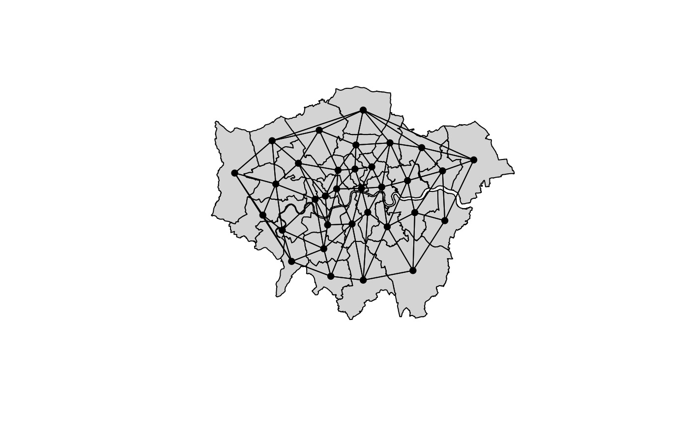
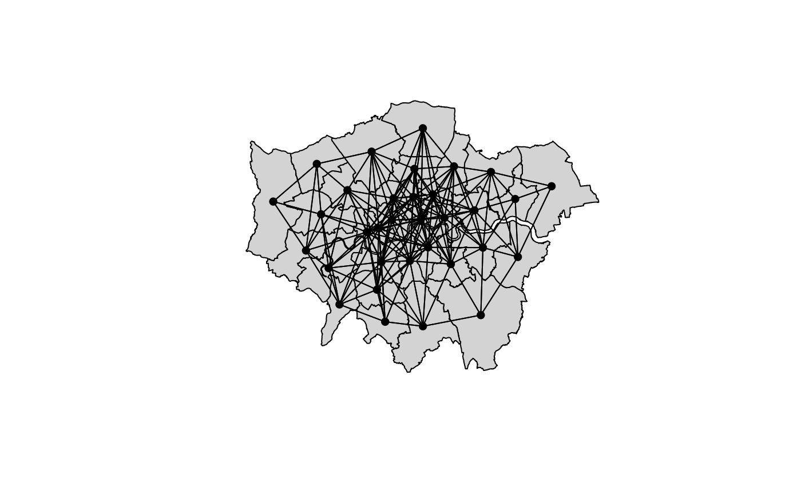

neighbormatrix.RdThe function takes a SpatialPolygonsDataFrame and computes
the neighbor penalty matrix that can be used to fit a Markov
random field, e.g., using the smooth constructor
smooth.construct.mrf.smooth.spec.
## Compute the neighborhood matrix.
neighbormatrix(x, type = c("boundary", "dist", "delaunay", "knear"),
k = 1, id = NULL, nb = FALSE, names = NULL, ...)
## Plot neighborhood structure.
plotneighbors(x, add = FALSE, ...)An object of class "SpatialPolygons" or "SpatialPolygonsDataFrame".
Which type of neighborhood structure should be used,
"boundary" uses poly2nb, "dist"
uses function dnearneigh, "delaunay"
uses function tri2nb and option
"knear" applies function knn2nb.
For type = "knear", specifies number of nearest neighbors.
An identifier variable for which the penalty matrix should be computed.
Should only the neighborhood object be returned.
Specifies the column where the regions names are provided in the data
slot in the "SpatialPolygonsDataFrame"
Should the neighborhood structure be added to an existing plot?
Arguments to be passed to function poly2nb,
dnearneigh, tri2nb or
knn2nb.
if (FALSE) data("LondonFire")
## Compute polygon boundary based
## neighborhood matrix.
nm <- neighbormatrix(LondonBoroughs)
print(nm)
#> 0 1 2 3 4 5 6 7 8 9 10 11 12 13 14 15 16 17 18 19 20 21 22 23 24
#> 0 4 0 0 0 0 0 0 0 0 0 0 0 0 0 0 0 0 0 -1 -1 -1 -1 0 0 0
#> 1 0 4 -1 0 0 0 0 0 0 0 -1 0 0 0 0 0 0 0 -1 0 -1 0 0 0 0
#> 2 0 -1 6 0 0 0 0 0 0 0 -1 -1 -1 -1 -1 0 0 0 0 0 0 0 0 0 0
#> 3 0 0 0 4 -1 0 -1 0 0 0 0 0 0 0 0 0 0 0 0 -1 0 0 -1 0 0
#> 4 0 0 0 -1 5 0 -1 -1 -1 0 0 0 0 0 0 0 0 0 0 0 0 0 -1 0 0
#> 5 0 0 0 0 0 2 0 0 0 0 0 0 0 0 0 0 0 -1 0 0 0 0 0 0 0
#> 6 0 0 0 -1 -1 0 3 -1 0 0 0 0 0 0 0 0 0 0 0 0 0 0 0 0 0
#> 7 0 0 0 0 -1 0 -1 4 -1 -1 0 0 0 0 0 0 0 0 0 0 0 0 0 0 0
#> 8 0 0 0 0 -1 0 0 -1 7 -1 0 0 0 0 0 0 0 0 0 0 0 0 -1 -1 -1
#> 9 0 0 0 0 0 0 0 -1 -1 5 0 0 0 0 0 -1 0 0 0 0 0 0 0 0 0
#> 10 0 -1 -1 0 0 0 0 0 0 0 5 -1 0 0 0 0 0 0 0 0 -1 -1 0 0 0
#> 11 0 0 -1 0 0 0 0 0 0 0 -1 3 -1 0 0 0 0 0 0 0 0 0 0 0 0
#> 12 0 0 -1 0 0 0 0 0 0 0 0 -1 3 -1 0 0 0 0 0 0 0 0 0 0 0
#> 13 0 0 -1 0 0 0 0 0 0 0 0 0 -1 3 -1 0 0 0 0 0 0 0 0 0 0
#> 14 0 0 -1 0 0 0 0 0 0 0 0 0 0 -1 2 0 0 0 0 0 0 0 0 0 0
#> 15 0 0 0 0 0 0 0 0 0 -1 0 0 0 0 0 3 -1 0 0 0 0 0 0 0 0
#> 16 0 0 0 0 0 0 0 0 0 0 0 0 0 0 0 -1 5 -1 0 0 0 0 0 0 0
#> 17 0 0 0 0 0 -1 0 0 0 0 0 0 0 0 0 0 -1 4 0 0 0 0 0 0 0
#> 18 -1 -1 0 0 0 0 0 0 0 0 0 0 0 0 0 0 0 0 3 0 -1 0 0 0 0
#> 19 -1 0 0 -1 0 0 0 0 0 0 0 0 0 0 0 0 0 0 0 3 0 -1 0 0 0
#> 20 -1 -1 0 0 0 0 0 0 0 0 -1 0 0 0 0 0 0 0 -1 0 5 -1 0 0 0
#> 21 -1 0 0 0 0 0 0 0 0 0 -1 0 0 0 0 0 0 0 0 -1 -1 4 0 0 0
#> 22 0 0 0 -1 -1 0 0 0 -1 0 0 0 0 0 0 0 0 0 0 0 0 0 4 -1 0
#> 23 0 0 0 0 0 0 0 0 -1 0 0 0 0 0 0 0 0 0 0 0 0 0 -1 3 -1
#> 24 0 0 0 0 0 0 0 0 -1 0 0 0 0 0 0 0 0 0 0 0 0 0 0 -1 4
#> 25 0 0 0 0 0 0 0 0 -1 -1 0 0 0 0 0 0 0 0 0 0 0 0 0 0 -1
#> 26 0 0 0 0 0 0 0 0 0 0 0 0 0 0 0 0 0 0 0 0 0 0 0 0 0
#> 27 0 0 0 0 0 0 0 0 0 0 0 0 0 0 0 0 0 0 0 0 0 0 0 0 0
#> 28 0 0 0 0 0 0 0 0 0 0 0 0 0 0 0 0 -1 0 0 0 0 0 0 0 0
#> 29 0 0 0 0 0 0 0 0 0 -1 0 0 0 0 0 -1 -1 0 0 0 0 0 0 0 0
#> 30 0 0 0 0 0 0 0 0 0 0 0 0 0 0 0 0 -1 -1 0 0 0 0 0 0 0
#> 31 0 0 0 0 0 -1 0 0 0 0 0 0 0 0 0 0 0 -1 0 0 0 0 0 0 0
#> 32 0 0 0 0 0 0 0 0 0 0 0 0 0 0 0 0 0 0 0 0 0 0 0 0 -1
#> 25 26 27 28 29 30 31 32
#> 0 0 0 0 0 0 0 0 0
#> 1 0 0 0 0 0 0 0 0
#> 2 0 0 0 0 0 0 0 0
#> 3 0 0 0 0 0 0 0 0
#> 4 0 0 0 0 0 0 0 0
#> 5 0 0 0 0 0 0 -1 0
#> 6 0 0 0 0 0 0 0 0
#> 7 0 0 0 0 0 0 0 0
#> 8 -1 0 0 0 0 0 0 0
#> 9 -1 0 0 0 -1 0 0 0
#> 10 0 0 0 0 0 0 0 0
#> 11 0 0 0 0 0 0 0 0
#> 12 0 0 0 0 0 0 0 0
#> 13 0 0 0 0 0 0 0 0
#> 14 0 0 0 0 0 0 0 0
#> 15 0 0 0 0 -1 0 0 0
#> 16 0 0 0 -1 -1 -1 0 0
#> 17 0 0 0 0 0 -1 -1 0
#> 18 0 0 0 0 0 0 0 0
#> 19 0 0 0 0 0 0 0 0
#> 20 0 0 0 0 0 0 0 0
#> 21 0 0 0 0 0 0 0 0
#> 22 0 0 0 0 0 0 0 0
#> 23 0 0 0 0 0 0 0 0
#> 24 -1 0 0 0 0 0 0 -1
#> 25 6 0 -1 0 -1 0 0 -1
#> 26 0 3 0 -1 0 -1 0 -1
#> 27 -1 0 4 -1 -1 0 0 -1
#> 28 0 -1 -1 6 -1 -1 0 -1
#> 29 -1 0 -1 -1 6 0 0 0
#> 30 0 -1 0 -1 0 5 -1 0
#> 31 0 0 0 0 0 -1 3 0
#> 32 -1 -1 -1 -1 0 0 0 5
#> attr(,"call")
#> spdep::nb2mat(neighbours = adjmat, style = "B", zero.policy = TRUE)
## Plot neighborhood structures.
plotneighbors(LondonBoroughs)
plotneighbors(LondonBoroughs, type = "delaunay")
#> Warning: style is M (missing); style should be set to a valid value

plotneighbors(LondonBoroughs, type = "dist", d1 = 0, d2 = 0.15)
